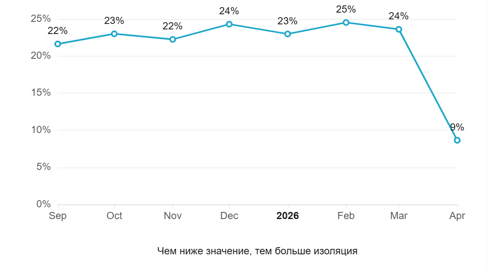
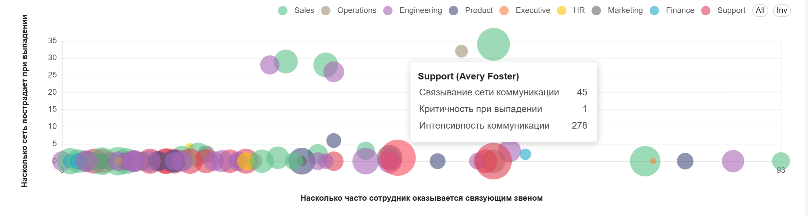
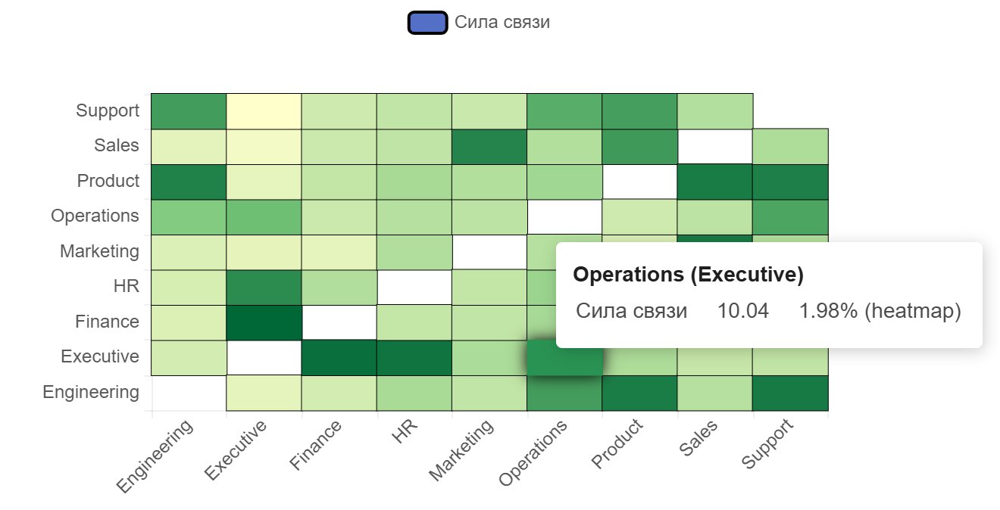
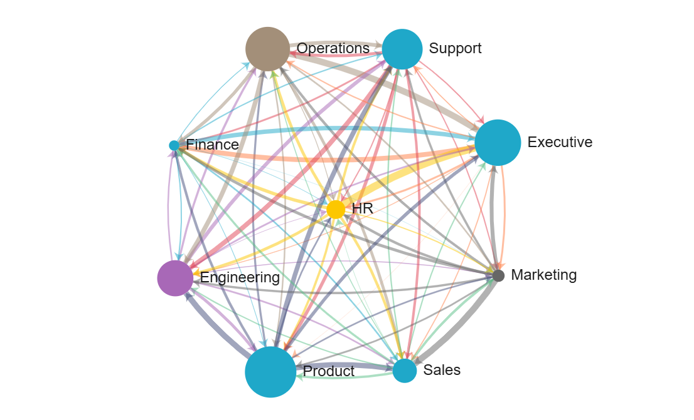

Настройка коммуникации · AI
Переписка, звонки и встречи — как наблюдаемый сигнал. Находим, где он теряется, и настраиваем это место.
Как это работает
Вся коммуникация становится наблюдаемой картиной: кто с кем говорит, где плотно, где пусто, где решения растворяются в переписке.
Не догадка, а конкретная точка: зависший кейс, разрыв между отделами, человек-бутылочное горлышко, паттерн, ведущий к плохому исходу.
Точечное вмешательство там, где реально теряется ценность — не «поменяем всё», а конкретная правка процесса, роли или скрипта.
Фрагменты рабочих дашбордов




Портфолио сценариев
Входящий сигнал
Из тикетов поддержки и записей sales-звонков — то, что клиенты просили на самом деле, а не то, что менеджер запомнил и пересказал по памяти.
3 фичи из анализа логов саппорта · adoption 40%+Поведенческий тюнинг
Что отличает лучших менеджеров от средних — в реальных записях, не в теории продаж.
57% слушать / 43% говорить — норма у лучшихКакие реплики и моменты внимания действительно ведут к довольному гостю и чеку — тюнинг по лучшим сменам, не по методичке.
Обязательства
Зависшие межфункциональные передачи, кейсы без явного владельца — до того как всплывёт «но я же говорил».
80%+ оценок 9 или 10 — за выявленные скрытые обязательстваИз записей звонков и переписки — обязательства, которые никто не зафиксировал и не подтвердил, до того как они станут проблемой.
37% обязательств со звонков не фиксируются нигде, кроме памяти участниковДанные
Коннекторы снимают только факт отправки: отправитель, получатель, время. Содержание сообщений в базу продукта не попадает.
Основной вариант развёртывания — сервер с данными внутри ИТ-периметра компании. Внешнее облако — только по согласованию.
Имена можно хранить открыто или как обезличенные ID — обезличивание происходит на уровне коннектора, в момент снятия.
Формат пилота
6–10
Недель
От подключения данных до итогового заключения с гипотезами и приоритетами действий.
2–3
Сценария
Фокусируемся на том, что болит сильнее всего сейчас, не пытаемся охватить всё сразу.
100%
Возврат
Если результат не устроил — возвращаем всю сумму по первому требованию, без разбирательств.
Контакт
Начнём с короткого разговора о том, где у вас теряется больше всего — и решим, стоит ли смотреть глубже.
Написать нам